Česky:
|
PicoLibSDK
Alternativní rozšířená knihovna C/C++ SDK pro Raspberry Pico, RP2040 a RP2350
verze 2.09, květen 2025
(c) Miroslav Němeček
https://github.com/Panda381/PicoLibSDK
>>> Downloady - odkazy <<<
Picopad na pajenicko.cz - PRODEJ
Picopad Song: YouTube ... video ... mp3 ... Lyrics
Obsah:
PicoLibSDK je alternativní
rozšířená knihovna C/C++ SDK pro modul Raspberry Pico s
procesorem RP2040, se snadným překladem pod Windows. Lze ji
použít i pro jiné moduly, které tento procesor používají.
Oproti původní knihovně SDK se knihovna PicoLibSDK snaží rozšířit
funkčnost původní knihovny a zejména usnadnit její používání.
Vlastnosti knihovny PicoLibSDK
Boot loader: Boot loader umožňující výběr a spouštění programů UF2 z SD karty.
SDK řízení hardware: ADC, boot ROM, řízení systémových hodin, řízení CPU, hardwarová dělička, DMA, doorbells, double a float aritmetika, FIFO mailboxy, programování flash, GPIO, HSTX, I2C, hardware interpolator, IRQ, multicore, PIO, PLL, PSRAM, PWM, QSPI, reset a power řízení, ROSC, RTC, SHA256, SPI, spinlocky, SysTick, časovač s alarmem, TMDS, TRNG, watchdog, XOSC. Procesor RP2350 může být používán v módu ARM nebo RISC-V.
Tool knihovna: alarm, 32-bitový Unix kalendář, dlouhý 64-bitový astronomický kalendář, kreslení na canvas, RGBA barevný vektor, CRC kontrola s podporou DMA, dekódování čísel, emulátory, escape paketový protokol, event kruhový buffer, FAT file system, doubly linked list, alokátor paměti, 2D transformační matice, mini-ring buffer, formátovaný tisk, PWM zvukový výstup, generátor náhody, rectangle, kruhový buffer, DMA kruhový buffer, SD karta, streamy, textové řetězce, textové seznamy, textový tisk, tree list, VGA kreslení, video přehrávač, MP3 přehrávač.
Knihovna USB: multiplayer mini-port, CDC device a host - sériová komunikace, HID device a host - včetně externí klávesnice a myši.
Velká celá čísla: výpočty s velkými celými čísly, výpočet Bernoulliho čísel.
Reálná čísla: výpočty s čísly s pohyblivou řádovou čárkou s volitelnou přesností až 3690 číslic a 30-bitovým exponentem. Vědecké funkce s volitelnou metodou výpočtu - Ln, Exp, Sqrt, Sin, Cos, Tan, arcus, hyperbolické funkce a mnoho dalších. Lineární faktoriály s přesným a rychlým výpočtem.
Ovladače displeje: Připravená podpora TFT, DVI a VGA displeje.
Zařízení: Podpora desek Picoino/PicoinoMini/Picotron/DemoVGA/PicoPadVGA s VGA displejem, PicoPad s TFT displejem a základní Raspberry Pico bez dalšího hardware.
Kompatibilita: Knihovna je ve většině funkcí zpětně kompatibilní s originální SDK knihovnou. Lze vyvolávat většinu funkcí z originální SDK knihovny, přestože vnitřně jsou často řešené jinak.
Boot loader pro spouštění programů z SD karty:
Zdrojový kód knihovny je, až
na několik výjimek, zcela volně k použití pro jakýkoli účel,
včetně komerčního využití. Většina zdrojového kódu
knihovny nebo jeho části je možné používat a upravovat bez
omezení. Jedinou výjimkou jsou knihovny pro single- a
double-floating-point matematiku, které jsou převážně
autorským dílem Raspberry Pi a Marka Owena, a proto podléhají
licenčním podmínkám původních autorů.
Download knihovny PicoLibSDK (zdrojové kódy, obrazy SD karty, ukázkové programy)
>>> Obsah SD karty pro PicoPad 1 <<<
>>> Obsah SD karty pro PicoPad 2 v ARM módu <<<
>>> Obsah SD karty pro PicoPad 2 v RISC-V módu <<<
>>> Obsah SD karty pro PicoPadHSTX v ARM módu <<<
>>> Obsah SD karty pro PicoPadHSTX v RISC-V módu <<<
Download manuálu ke knihovně PicoLibSDK (formáty DOC, ODT, PDF)
PicoLibSDK na Github: https://github.com/Panda381/PicoLibSDK
Video se slide-show přehrávačem pro porovnání videomódů PicoLibSDK
Obsah SD karty pro desku DemoVGA
Obsah SD karty pro PicoinoMini
Ukázkové programy pro Raspberry Pico 1
Ukázkové programy pro Raspberry Pico 2 v ARM módu
Ukázkové programy pro Raspberry Pico 2 v RISC-V módu
Picopad Song: YouTube ... video ... mp3 ... Lyrics
Cílová zařízení
Hlavním cílovým zařízením, pro které je knihovna v současnosti připravena, je konzole PicoPad, s 16-bitovým TFT displejem 320x240 pixelů, 8 tlačítky a mikroSD kartou. Většinu programů a her na modulu PicoPad lze ovládat také z klávesnice USB, která je připojena ke konektoru USB modulu Pico prostřednictvím napájecího rozbočovače, který poskytuje externí napájení +5 V. Mapování kláves: A->Ctrl, B->Alt, X->Shift, Y->Esc.
PicoPad 1.0 schéma zapojení (nebo jako PDF):
PicoPad 0.8
Je připraven překlad také pro PicoPad verze 0.8, což byl první prototyp PicoPad. Překlad slouží spíše jako ukázka možnosti alternativní konfigurace překladu.
PicoPad 0.8 schéma zapojení (nebo jako PDF):
PicoPadHSTX je alternativou ke konzoli PicoPad s výstupem na displej VGA a DVI (HDMI), s procesorem RP2350 a stereofonním zvukem. Obvykle se používá v rozlišení 320x240 pixelů s 16bitovým barevným formátem RGB565. Většinu programů a her na zařízení PicoPadHSTX lze ovládat také pomocí klávesnice USB. PicoPadHSTX musí být napájen z externího zdroje +5 V přes USB konektor. Mapování kláves: A->Ctrl, B->Alt, X->Shift, Y->Esc. Pro PicoPadHSTX jsou k dispozici všechny programy pro PicoPad, včetně více než 2000 her pro GameBoy a NES konzoli. Připravené hry pro GameBoy a NES můžete nalézt na serverech webshare a datoid. ... Download podkladů pro PicoPadHSTX ... Download SD karty pro PicoPadHSTX v ARM módu ... Download SD karty pro PicoPadHSTX v RISC-V módu.
PicoPadHSTX schéma zapojení:
PicoPadHSTX osazení součástek:
PicoPadVGA je alternativou ke konzoli PicoPad s výstupem na displej VGA. Obvykle se používá v rozlišení 320x240 pixelů s 16bitovým barevným formátem RGB565. Podporováno je také rozlišení 400x300 pixelů. Většinu programů a her na zařízení PicoPadVGA lze ovládat také pomocí klávesnice USB. PicoPadVGA musí být napájen z externího zdroje +5 V přes napájecí USB konektor. Mapování kláves: A->Ctrl, B->Alt, X->Shift, Y->Esc. Download podkladů pro PicoPadVGA
PicoPadVGA schéma zapojení:
PicoPadVGA osazení součástek:
Další připravenou alternativou překladu je Picoino, což je předchůdce PicoPad, s vestavěnou klávesnicí 56 tlačítek a výstupem na VGA monitor v 8-bitovém barevném módu RGB332. V knihovně je připraveno rozlišení obrazu 320x240. Spolu s knihovnou PicoVGA je možné i vyšší rozlišení a kombinované módy. Download podkladů pro Picoino.
Ukázkové programy pro Picoino jsou připravené adaptací programů pro PicoPad - grafika změněna z 16-bitů na 8-bitů a k ovládání se používá 8 tlačítek klávesnice přemapovaných na kódy PicoPad (kurzory, Space -> A, Z -> B, Ctrl ->X, BackSpace -> Y).
Picoino 1.0 schéma zapojení:
Picoino 1.0 osazení součástek:
Picoino výstup na VGA monitor:
Jako menší bratr PicoPad vznikla odlehčená verze Picoino, která má 8-bitový výstup RGB332 na VGA displej (mód QVGA 320x240), SD kartu, externí konektor jako PicoPad a 8 tlačítek jako PicoPad. Je určena především pro tutoriály k programování Raspberry Pico, protože umožňuje snadné sestavení z běžných domácích zásob - pro výstup na VGA monitor mohou stačit 3 rezistory a VGA konektor. Download podkladů pro PicoinoMini.
PicoinoMini schéma zapojení:
PicoinoMini osazení součástek:
PicoinoMini výstup na VGA monitor:
DemoVGA je demo modul s výstupem na VGA monitor v rozlišení 320x240 pixelů, 16-bitů barvy ve formátu RGB565. Obsahuje SD kartu, přídavný napájecí USB konektor, výstup na sluchátka a 3 tlačítka. K některým programům (typicky hry) se používá externí USB klávesnice. Download podkladů pro DemoVGA.
DemoVGA schéma zapojení:
DemoVGA osazení součástek:
Picotron je jednoduchý minipočítač zaměřený na technické aplikace. Disponuje výstupem na VGA displej v rozlišení až 800x600 pixelů, 4-bitový barevný výstup v režimu YRGB1111 (16-barevný režim jako v PC-CGA a EGA). Dále má SD kartu, sluchátkový audio konektor a klávesnici ze 40 mikrospínačů. Download podkladů pro Picotron.
Picotron schéma zapojení:
Picotron osazení součástek:
Raspberry Pico
Knihovna je připravena též pro základní modul Raspberry Pico, bez přídavného hardware. To slouží především ke zkoušení základních tutoriálů pro Raspberry Pico.
Součástí knihovny je připravené ukázkové programy a hry. Jsou připraveny obrazy SD karty pro jednotlivá cílová zařízení. Před použitím SD karty je potřeba do procesoru nahrát boot loader - to je možné buď nahrátím programu LOADER.UF2 z root složky obrazu SD karty, nebo nahrátím kteréhokoliv jiného programu, protože každý program obsahuje současně i boot loader. Programy lze ukončit tlačítkem Y a přejít do boot loaderu.
Config - nastavení konfigurace PicoPad. Nastaví hlasitost, podsvícení displeje, referenční napětí ADC, napětí pro měření baterie, kalibrace měření teploty, kalibrace frekvence krystalu.
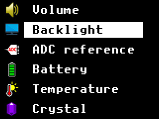
SD-card boot loader - program je nahrán do paměti RAM a umožňuje zapsat nový boot loader z SD karty do flash paměti (případně s aplikací). Ale také může uložit obsah paměti flash do souboru UF2, aniž by se obsah paměti flash spuštěním tohoto programu změnil.
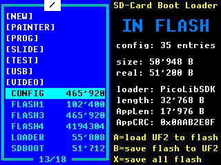
Frekvenční generátor - generuje obdélníkový signál nebo PWM signál (sinus, pila, trojúhelník - sample rate 100 kHz), frekvenční rozsah od 0,01 Hz do 100 MHz. Přesnost 5 číslic (30 ppm) nebo po kalibraci krystalu 6 číslic (až 3 ppm, podle přesnosti kalibrace). Výstup buď na GPIO14 nebo na GPIO15 (s reproduktorem).
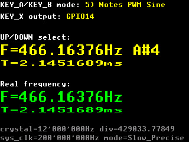
Měřič frekvence - měří frekvenci ze 2 vstupů (GPIO1 a GPIO14) v rozsahu 0,0256 Hz až 100 MHz, s přesností 5 číslic (30 ppm) nebo po kalibraci krystalu 6 číslic (až 3 ppm, podle přesnosti kalibrace). Měří s plnou přesností i nízké kmitočty, tj. nejedná se jen o jednoduchý čítač pulzů. Během měření kombinuje 3 různé metody, s využitím obou PIO.
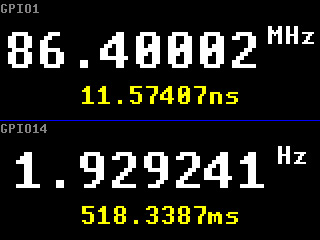
RC metr - měří odpor rezistorů, kapacitu a ESR kondenzátorů. Podle následujícího schématu je zapotřebí adaptér s 5 rezistory, připojený k externímu konektoru. GPIO0 ... rezistor 200 ohmů, GPIO1 ... rezistor 2 Kohm, GPIO14 ... rezistor 20 Kohm, GPIO26 ... rezistor 200 Kohm, GPIO27 ... rezistor 2 Mohm, GPIO28 ... testovací vstup. V případě PicoPadVGA je nutné vypnout výstupní piny VGA pomocí přepínače DIL. Rezistory: 0,1 ohm až 100 Mohm, přesnost 5 % (nižší na koncích rozsahu). Kondenzátory: 5 pF až 5 mF, přesnost 10 %. Metoda měření kondenzátorů využívá logaritmickou regresi křivek nabíjení a vybíjení kondenzátoru.
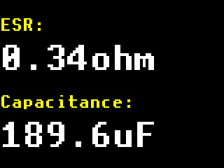
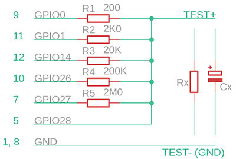
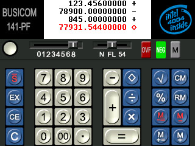
141-PF - emulátor kalkulačky s procesorem Intel 4004.
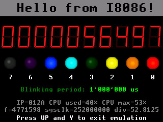 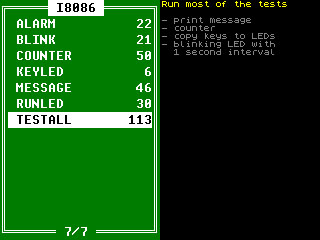
Testovací emulátory mnoha
procesorů, spolu s ukázkovými aplikacemi.
Videa lze přehrávat programem VIDEO.UF2 na zařízeních PicoPad a DemoVGA. Byla vygenerována pomocí programu PicoPadVideo. Videa je nutné nahrát na SD kartu do složky /VIDEO.
Download základní sady (310 MB), sada obsahuje:
BIRDS .....
(00:44, 17 MB) Dva hašteřiví ptáčkové v kleci
CANORA .... (00:29, 11 MB) Česká středověká
hudební skupina Canora
CORALS .... (05:42, 134 MB) Ryby v Egyptě mezi
korály
MANDEL .... (09:05, 214 MB) Mandelbrot Fractal
Deep Zoom 10^220
Download další ukázková videa (z důvodu ukončení činnosti serveru Ulozto jsou odkazy nefunkční, pouze pro ilustraci):
BUNNY
..... (04:56, 116 MB) Bugs Bunny - králičí sezóna a kachní
sezóna (Anglický dabing)
CIMRMAN ... (66:09, 1556 MB) Cimrman - Dlouhý, Široký a
Krátkozraký
KYARY
..... (04:18, 101 MB) Kyary Pamyu Pamyu - Ring a Bell
MINION
.... (12:12, 287 MB) Minion Madness
MOLE
...... (13:01, 307 MB) Jak krtek ke kalhotkám přišel
SHREK
..... (00:59, 23 MB) Závěrečná písnička ze Shrek 1
SNOWHITE ..... (80:07, 1885 MB) Sněhurka a sedm trpaslíků
(Český dabing)
TROOPERS .. (53:20 1255 MB) Troopeři
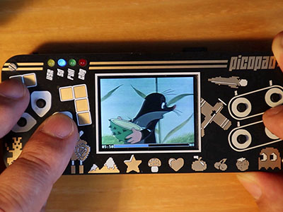
Pictor (Picopad Collector) je střílecí hra. Vznikla ve dvou verzích. Jednak pro konzoli Picopad, s rozlišením grafiky 320x240 pixelů, a jednak jako Windows aplikace, s vyšším rozlišením grafiky 960x720 pixelů a s vyšší kvalitou zvuku. Hra obsahuje 12 pozadí (pro 12 scén), 13 aktorů, 36 nepřátel a 12 hudebních smyček. Hra je k dispozici spolu se zdrojovými kódy jako Open Source a je možné ji, nebo její části, používat k libovolným účelům. Zdrojové kódy Windows verze hry je možné překládat pomocí MS VC++ 2005.
Pictor pro Windows a Pictor pro Picopad:
Download Pictor pro Windows (45 MB)
Download Pictor pro Windows, spolu se zdrojovým kódem (90 MB)
Pictor na Github, Windows verze: https://github.com/Panda381/Pictor
Pictor na Github, verze pro konzoli Picopad: https://github.com/Panda381/PicoLibSDK/tree/main/PicoPad/GAME/PICTOR
Pictor UF2 pro Picopad: https://github.com/Panda381/PicoLibSDK/tree/main/!PicoPad10/GAME
Emulátor her pro Game Boy Mono a Game Boy Color pro Picopad, Picopad2 a PicopadHSTX (v ARM i RISC-V módu). Bylo otestováno a připraveno 573 her ve spustitelném tvaru UF2, z toho 271 her je pro Game Boy Mono a 302 her je pro Game Boy Color. Všechny hry pro Game Boy Mono jsou kolorizované. Úspěšnost emulace je 80%. 15% původních her je nefunkčních (nejsou součástí balíku) a 5% her je sice funkčních, ale mají estetické vady grafiky (např. roztřesený úvodní obrázek). Tlačítka X=START, Y=SELECT. Kombinace Y+Nahoru vyvolá herní menu (uložení hry).
Z důvodu autorských práv nelze poskytnout hry ke stažení. Vlastníte-li legální kopii hry ve formátu souborů *.GB nebo *.GBC, můžete k emulaci na Picopad použít některou z následujících možností:
Může být možné nalézt vaši hru v archivech připravených her na některém serveru, např. webshare nebo datoid. Hru v archivu vyhledejte podle jména uvedeného v seznamu níže. Hru spustíte nahrátím souboru *.UF2 do Picopad. K dispozici jsou překlady pro Picopad1 (modul Pico1 s RP2040), pro Picopad2 (modul Pico2 s RP2350) v ARM i RISC-V módu a pro PicopadHSTX (modul Pico2 s RP2350) v ARM i RISC-V módu.
Hru můžete zkonvertovat do spustitelného tvaru *.UF2 pomocí aplikace APPS. Hru nahrajete na SD kartu a vyberete ji v seznamu her v APPS.
Hru si můžete přeložit do spustitelného tvaru *.UF2 sami. Potřebujete k tomu zdrojový kód emulátoru, knihovnu PicoLibSDK a kompilátor GCC ARM. Hru uložíte do složky "samples" a přeložíte ji pod Windows povelovým souborem "c_all_samples.bat". V systému Linux budete potřebovat nejdříve přeložit podpůrný program GBprep, připravit program příkazem s GBprep a zkompilovat pomocí c.sh.
Download zdrojového kódu emulátoru
Download obsahu SD karty - pouze data (texty a obrázky) bez spustitelných souborů
Seznam her TXT (krátké DOS jméno a plné jméno hry)
Náhledy her: 1 - 2 - 3 - 4 - 5 - 6 - 7 - 8 - 9 - 10 - 11 - 12 - 13 - 14 - 15 - 16 - 17 - 18 - 19 - 20 - 21 - 22 - 23 - 24 - Vše (24 stránek) - Vše (PNG soubory)
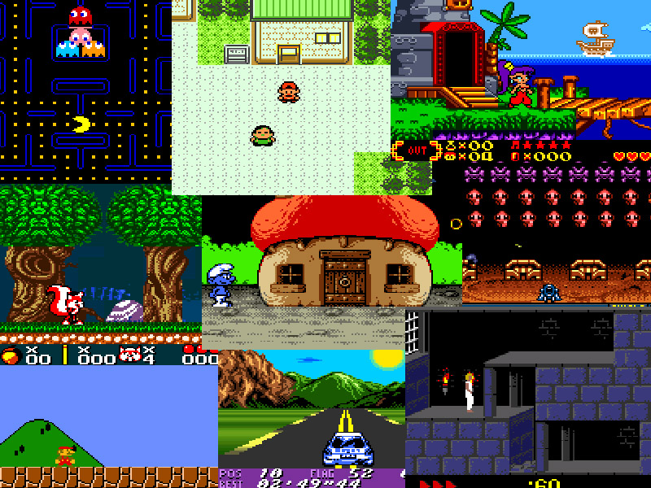
Emulátor her pro NES pro Picopad, Picopad2 a PicopadHSTX (v ARM i RISC-V módu). Bylo otestováno a připraveno 1549 her ve spustitelném tvaru UF2. Tlačítka X=START, Y=SELECT. Kombinace Y+Nahoru vyvolá herní menu (uložení hry).
Z důvodu autorských práv nelze poskytnout hry ke stažení. Vlastníte-li legální kopii hry ve formátu souborů *.NES, můžete k emulaci na Picopad použít některou z následujících možností:
Může být možné nalézt vaši hru v archivech připravených her na některém serveru, např. webshare nebo datoid. Hru v archivu vyhledejte podle jména uvedeného v seznamu níže. Hru spustíte nahrátím souboru *.UF2 do Picopad. K dispozici jsou překlady pro Picopad1 (modul Pico1 s RP2040), pro Picopad2 (modul Pico2 s RP2350) v ARM i RISC-V módu a pro PicopadHSTX (modul Pico2 s RP2350) v ARM i RISC-V módu.
Hru můžete zkonvertovat do spustitelného tvaru *.UF2 pomocí aplikace APPS. Hru nahrajete na SD kartu a vyberete ji v seznamu her v APPS.
Hru si můžete přeložit do spustitelného tvaru *.UF2 sami. Potřebujete k tomu zdrojový kód emulátoru, knihovnu PicoLibSDK a kompilátor GCC ARM. Hru uložíte do složky "samples" a přeložíte ji pod Windows povelovým souborem "c_all_samples.bat". V systému Linux budete potřebovat nejdříve přeložit podpůrný program NESprep, připravit program příkazem s NESprep a zkompilovat pomocí c.sh.
Download zdrojového kódu emulátoru
Download obsahu SD karty - pouze data (texty a obrázky) bez spustitelných souborů
Seznam her TXT (krátké DOS jméno a plné jméno hry)
Náhledy her: 1 - 2 - 3 - 4 - 5 - 6 - 7 - 8 - 9 - 10 - 11 - 12 - 13 - 14 - 15 - 16 - 17 - 18 - 19 - 20 - 21 - 22 - 23 - 24 - 25 - 26 - 27 - 28 - 29 - 30 - 31 - 32 - 33 - 34 - 35 - 36 - 37 - 38 - 39 - 40 - 41 - 42 - 43 - 44 - 45 - 46 - 47 - 48 - 49 - 50 - 51 - 52 - 53 - 54 - 55 - 56 - 57 - 58 - 59 - 60 - 61 - 62 - 63 - 64 - 65 - Vše (65 stránek) - Vše (PNG soubory)
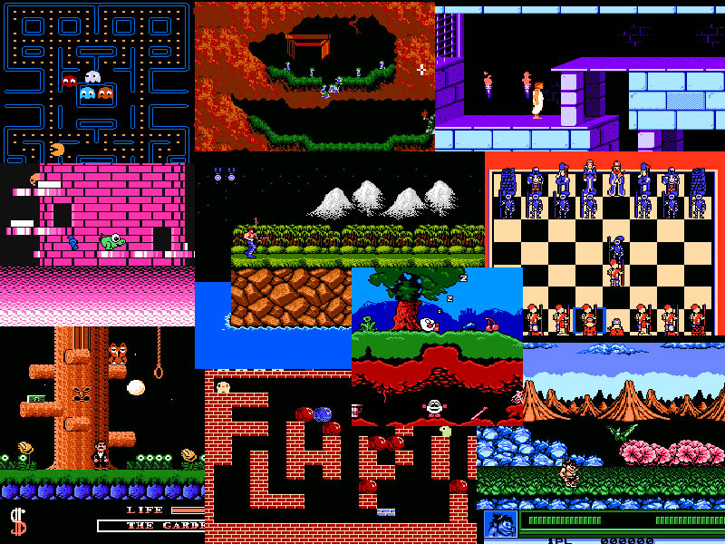
V následujících tabulkách jsou uvedeny naměřené průměrné časy floating-point funkcí SDK knihovny pro procesory RP2040 (Pico1) a RP2350 (Pico2). Byly testovány jak režimy se standardní libc knihovnou, tak i optimalizované verze. Tučným písmem jsou označeny typické konfigurace s maximální akcelerací.
Download tabulek spolu se zdrojovým kódem testů
Rychlejší výpočet základních float funkcí pro RP2350 v RISC-V módu: sdk_float_riscv.S
Rychlejší výpočet vědeckých float funkcí pro RP2350 v RISC-V módu: sdk_float_riscv_sci.S
Šablona rychlých float funkcí v C: sdk_float_riscv_sci.c
Rychlejší výpočet základních double funkcí pro RP2350 v RISC-V módu: sdk_double_riscv.S
Rychlejší výpočet vědeckých double funkcí pro RP2350 v RISC-V módu: sdk_double_riscv_sci.S
Šablona rychlých double funkcí v C: sdk_double_riscv_sci.c
Stručný přehled rychlosti hlavních akcelerovaných funkcí RISC-V Hazard3:
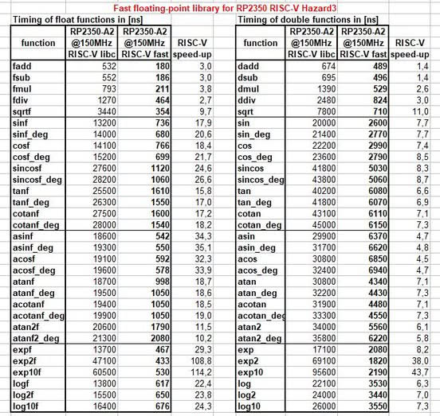
DispHSTX - Driver DVI (HDMI) a VGA displeje pro Pico2 RP2350
DispHSTX je driver pro mikrokontrolér Pico2 RP2350, v režimu ARMv8 i RISC-V Hazard3, umožňující generovat DVI (HDMI) a VGA videosignál pomocí periferie HSTX. Podporuje 40 různých obrazových formátů - 9 režimů pixelové grafiky, 2 textové režimy, atributovou kompresi, kompresi RLE a HSTX. Pro 8 základních grafických režimů jsou k dispozici funkce pro kreslení geometrických tvarů, obrázků a textů. Kreslící knihovna podporuje back buffer - aktualizuje hranice označující modifikovanou oblast. Při nedostatku paměti lze back buffer použít v režimu pruhů. Různé grafické obrazové formáty lze kombinovat na jedné obrazovce dělením obrazovky na pruhy a sloty. V obou režimech, DVI (HDMI) i VGA, je možné barevné rozlišení až 16 bitů na pixel. Ačkoli v režimu VGA je výstup pouze přes 6bitový převodník RGB, vyššího barevného rozlišení je dosaženo pomocí pulzní modulace PPM (Pulse Pattern Modulation), zobrazení se vizuálně blíží 15bitovému displeji. Časování generovaného videosignálu je omezeno pouze možnostmi přetaktování použitého mikrokontroléru. Obvykle je možné dosáhnout rozlišení až 1440x600 pixelů. K dispozici je též mini verze driveru, DispHSTXMini, která je omezena pouze na videomód 320x240 pixelů, avšak umožňuje přetaktování systémových hodin a malou zátěž procesoru.
DispHSTX driver je rozsáhlý, bližší informace k němu naleznete na samostatných odkazech:
DispHSTX na GitHub: https://github.com/Panda381/DispHSTX
DispHSTX web stránka: https://www.breatharian.eu/hw/disphstx/index.html
DispHSTX demo příklad v PicoLibSDK: https://github.com/Panda381/PicoLibSDK/tree/main/Pico/DispHSTX/HSTXDemo
Ukázkové programy PicoLibSDK obsahují aplikace pro přehrávání souborů MP3. Program nabídne přehrávání seznamu souborů MP3 ze své domovské složky a z podsložek. Při spuštění ze zavaděče předá zavaděč programu informace o cestě k domovské složce. Program MP3 lze uložit do libovolné složky, ale pokud je to možné, doporučuje se použít výchozí složku /MP3.
Při spuštění se zobrazí seznam složek a seznam skladeb MP3. V seznamu lze používat tlačítka: A = spuštění přehrávání nebo vnoření do složky, B = spuštění přehrávání od začátku, Y = návrat o jednu složku výše nebo konec programu.
Při přehrávání skladby se zobrazí obrázek BMP se stejným názvem jako MP3. Soubor BMP musí být ve formátu RGB565 (ve Photoshopu nelze použít ukládání v 16bitovém režimu, je třeba použít rozšířený režim RGB565) a o velikosti 320x240 pixelů. Pokud obrázek není k dispozici, zobrazí se pouze informační stránka.
Během přehrávání lze použít tlačítka Vlevo/vpravo = posun o 10 sekund, Nahoru/Dolů = ovládání hlasitosti, A = předchozí stopa, B = následující stopa, X = přepínání mezi obrázkem a informační stránkou a pozastavení skladby, Y = konec přehrávání.
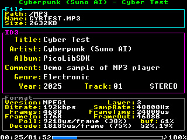
V dolní části informační stránky jsou 2 řádky sloužící pro informace o ladění. 'Poll' zobrazuje čas potřebný k načtení jednoho frame z SD karty. Tato položka musí být menší než položka 'FrameTime', jinak hrozí výpadek zvuku. Položka 'Decode' podobně ukazuje čas potřebný k dekódování jednoho frame. Hodnota musí být opět nižší než „FrameTime“. Položka „buf“ zobrazuje tři hodnoty - zaplnění vstupní vyrovnávací paměti při čtení frame, zaplnění vstupní vyrovnávací paměti při dekódování frame a zaplnění výstupní vyrovnávací paměti při dekódování frame. Pokud jsou hodnoty nízké, hrozí výpadek zvuku.
Aplikace MP3 přehrávače existuje ve dvou verzích. Základní varianta MP3.UF2 přehrává hudbu v MONO na interním reproduktoru Picopadu. Varianta MP3_GP01.UF2 přehrává hudbu v režimu STEREO na výstupní piny GPIO0 a GPIO1 (konektor Ext na Picopad). Doporučuje se použít následující zapojení:
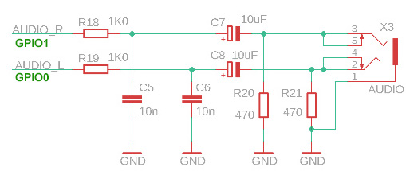
Výstup zvuku probíhá přes 12-bitový PWM se vzorkovací frekvencí 123 kHz. Na některých zařízeních může být slyšitelný šum a rušení na pozadí - do zvuku se mohou indukovat signály z SD karty a z měniče napětí.
>>> Demo video na YouTube <<<
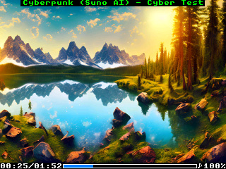
K přehrávači je k dispozici ukázková sada skladeb, ve stylu různých interpretů, vytvořená v nástroji Suno AI. Celkem je to 248 skladeb, obsahujících 13 hodin hudby. Skladby lze stáhnout zde.
Download skladeb část 1 (200 MB): styly ABBA, The Beatles, Breton Celtic, Classical
Download skladeb část 2 (224 MB): styly Computer, Cyberpunk, Enya, Folk
Download skladeb část 3 (213 MB): styly Children, Jean-Michel Jarre, J-pop
Download skladeb část 4 (217 MB): styly Loreena McKennitt, Medieval, Meditation, Metal, Vox Angeli
Download skladeb část 5 (207 MB): styly Mixed, Nightwish s Tarja Turunen, Mike Oldfield
Download programu: Picopad1, Picopad2, Picopad2riscv.
Zdrojový kód MP3 knihovny, zdrojový kód MP3 přehrávače.
Tento projekt nemá nic společného s knihovnou PicoLibSDK, a ani nejsem jeho autorem. Autorem je geniální hudebník a programátor Linus Akesson ze Švédska. Je to vzorová ukázka toho, co dokáže schopný programátor dosáhnout s modulem Raspberry Pico 2. I když ocení to spíše jen programátoři, kteří vědí, jak je něco takového extrémně obtížné dosáhnout. Mimochodem, já bych tohle rozhodně neuměl vytvořit. Jedná se o grafické a hudební demo, s výstupem na VGA monitor v rozlišení 1024x768/60Hz. Procesor přitom pracuje na frekvenci jen 130 MHz (!). Program tvoří 17000 řádků RISC-V assembleru a využívá do krajnosti všech možností procesoru RP2350. Výsledná animace je tak úžasná, že jsem si musel modul Kaleidoscopico postavit, abych ji mohl vidět na vlastní oči.
Schéma zapojení je jednoduché a lze ho realizovat i na kontaktním poli. Já si vyrobil plošný spoj, protože jsem chtěl mít zařízení kompaktní. Odpory pro VGA by měly sice mít vyšší přesnost, ale kvalitě obrazu moc neublíží když použijete blízké hodnoty jako já - 470, 1K0, 2K2 a 4K7.
Nahrál jsem záznam dema - záměrně kamerou a jen v ruce, z důvodu autentičnosti, aby bylo lépe vidět jak demo vypadá v reálu a že se skutečně vše generuje programově v reálném čase: https://www.youtube.com/watch?v=XT4kAaerATs
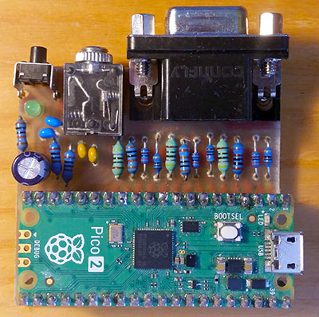 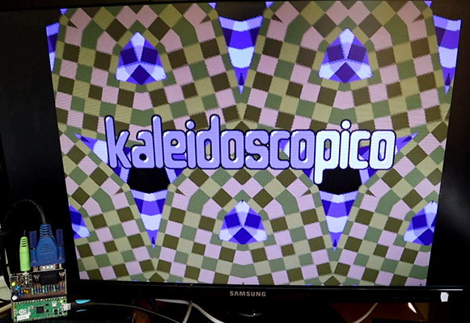
Download podkladů - schéma a plošný spoj v Eagle, firmware ve formátu UF2 a BIN
Stránky autora s projektem Kaleidoscopico
Autorova videonahrávka se záznamem Kaleidoscopico
Má nahrávka se záznamem Kaleodoscopico
Obdobné demo Craft, jehož je Linuse Akessona také autor, které jsem dříve realizoval
8. 3. 2023 prototyp PicoPad s alfa před-verzí PicoLibSDK verze 0.8.
28. 4. 2023 plná verze PicoPad s alfa verzí PicoLibSDK verze 0.90
28. 6. 2023 alfa verze PicoLibSDK v0.91, opraveno měření baterie
30. 7. 2023 verze 1.00: první oficiální uvedení
6. 8. 2023 verze 1.01: printf() tisk paměťového bloku, výstup stdio na UART a FILE, přidáno zařízení Pico a PicoinoMini, opravy a příklady USB
14. 8. 2023 verze 1.02: přidán video přehrávač, přidána deska DemoVGA, přidány kompilační skripty pro Linux
19. 8. 2023 verze 1.03: oprava rychlosti SPI SD karty, ošetření krátkých časů alarmu časovače
26.8.2023 verze 1.04: náhrada knihoven qvga/vga/qdraw/drawtft univerzálnější knihovnou minivga/draw s 4/8/15/16-bitovým výstupem a rozlišením 320x240 až 800x600. Přidán slide show přehrávač. Přidáno zařízení Picotron se 4-bitovým výstupem. Přidán BOOTSEL do boot3 loader (v menu baterie).
9.9.2023 verze 1.05: CSYNC pro VGA driver, přidána knihovna PicoVGA8, přidána knihovna VREG, nastavení hlasitosti, podsvícení a kalibrace krystalu.
3.10.2023 verze 1.06: přidáno zařízení PicoPadVGA a několik funkcí pro kreslení.
6.10.2023 verze 1.07: podpora programů v RAM, podpora ukládání a načítání Flash boot loaderu.
18.10.2023 verze 1.08: simulace keypadu pomocí klávesnice USB (USE_USBPAD, A->Ctrl, B->Alt, X->Shift, Y->Esc).
5.12.2023 verze 1.09: ADPCM komprese zvuku, interface originální SDK.
30.12.2023 verze 1.10: Intel 4004/4040 CPU emulátor, DVI (HDMI) displej, DVIVGA (HDMI s VGA) displej, selector souborů
27.01.2024 verze 1.11: zavaděč předává domovskou cestu aplikaci; emulátory CPU: I4004, I4040, I8008, I8048, I8052, I8080, I8085, I8086, I8088, I80186, I80188, M6502, M65C02, X80, Z80.
1.5.2024 verze 1.12: Spořič obrazovky v loaderu pro vypnutí během nabíjení. Jendoduchý PC DOS emulátor.
14.6.2024 verze 1.13: Game Boy Emulátor
8.10.2024 verze 2.00: podpora RP2350 Pico 2
27.10.2024 verze 2.01: Rychlá float knihovna pro RISC-V Hazard3 jádro.
5.11.2024 verze 2.02: NES Emulátor
3.12.2024 verze 2.03: Rychlá double knihovna pro RISC-V Hazard3 jádro.
24.2.2025 verze 2.04: DispHSTX knihovna, DrawCan knihovna, rychlejší překlad, konfigurovatelné cesty překladu
2.3.2025 verze 2.05: Kompilace DispHSTX pro Raspberry PicoSDK
5.3.2025 verze 2.06: Update PWMSnd - vyšší kvalita zvuku, méně šumu, vyšší výstupní samplovací rychlost PWM, 12-bitový výstup, podpora stereo a 16-bit formátu
14.3.2025 verze 2.07: MP3 dekodér a přehrávač
1.5.2025 verze 2.08: Přidána konzole PicopadHSTX a driver DispHSTXMini
7.5.2025 verze 2.09: podpora paměti PSRAM, alokátor paměti PSRAM
Miroslav Němeček
{kind=link}
{kind=link}
{kind=link}
{kind=link}
{kind=link}
{kind=link}
{kind=link}
{kind=link}
{kind=link}
{kind=link}
{kind=link}
{kind=link}
{kind=link}
{kind=link}
{kind=link}
{kind=link}
{kind=link}
{kind=link}
{kind=link}
{kind=link}
{kind=link}
{kind=link}
{kind=link}
{kind=link}
{kind=link}
{kind=link}
{kind=link}
{kind=link}
{kind=link}
{kind=link}
{kind=link}
{kind=link}
{kind=link}
{kind=link}
{kind=link}
{kind=link}
{kind=link}
{kind=link}
{kind=link}
{kind=link}
{kind=link}
{kind=link}
{kind=link}
{kind=link}
{kind=link}
{kind=link}
{kind=link}
{kind=link}
{kind=link}
{kind=link}
{kind=link}
{kind=link}
{kind=link}
{kind=link}
{kind=link}
{kind=link}
{kind=link}
{kind=link}
{kind=link}
{kind=link}
{kind=link}
{kind=link}
{kind=link}
{kind=link}
{kind=link}
{kind=link}
{kind=link}
{kind=link}
{kind=link}
{kind=link}
{kind=link}
{kind=link}
{kind=link}
{kind=link}
{kind=link}
{kind=link}
{kind=link}
{kind=link}
{kind=link}
{kind=link}
{kind=link}
{kind=link}
{kind=link}
{kind=link}
{kind=link}
{kind=link}
{kind=link}
{kind=link}
{kind=link}
{kind=link}
{kind=link}
{kind=link}
{kind=link}
{kind=link}
{kind=link}
{kind=link}
{kind=link}
{kind=link}
{kind=link}
{kind=link}
{kind=link}
{kind=link}
{kind=link}
{kind=link}
{kind=link}
{kind=link}
{kind=link}
{kind=link}
{kind=link}
{kind=link}
{kind=link}
{kind=link}
{kind=link}
{kind=link}
{kind=link}
{kind=link}
{kind=link}
{kind=link}
{kind=link}
{kind=link}
{kind=link}
{kind=link}